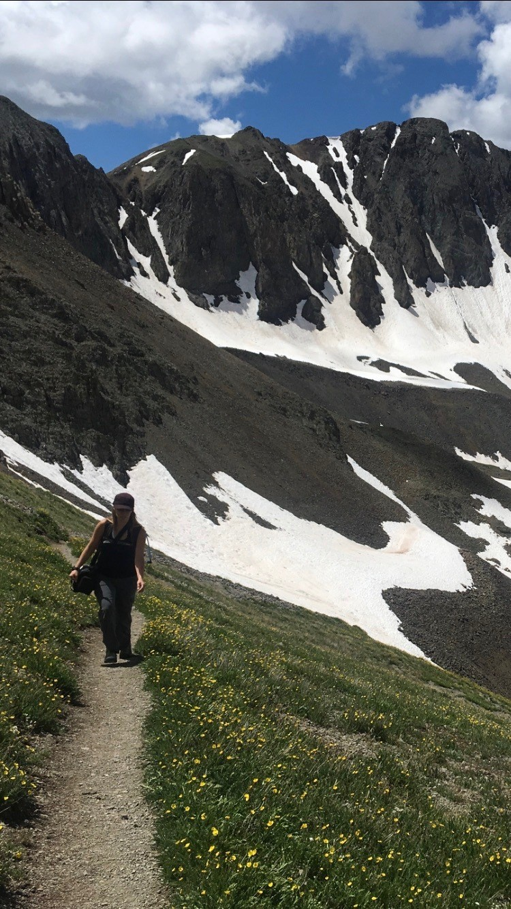

J. L. Blankenship Resume

Summary
I have over 10 years in journalism as a news director at KWUF radio in Pagosa Springs and publishing through a multitude of online publications. I worked as an advertising sales consultant for 7 years at KWUF radio. Healthcare has been more focus most recently both in the applied care and insurance realms. Photography is an ongoing skill that Colorado offers as the perfect muse for exploring my visual explorations.
Education
- Colorado Technical University, Online - Bachelor's Health Care Management, 2016
- Ellis College at New York Institute of Technology, Online - Master's Communication Arts/Journalism, 2009
- Fort Lewis College, Durango, CO - Bachelor's English Communications, 2005
Work Experience
Enrollment Specialist, eProvider Solutions, Evercommerce - 2021 to present
I currently assist providers submit agreements for insurance companies so that they can bill for their customers. This consists of meeting with the providers, following up on the agreements, and working through any payer issues. I also assist with provides with issues and meet to address the those problems. I also work with new onboarding providers, training them how to request the agreements, and following up with the payers to receive approval on those agreements.Business Manager, Animas Surgical Hospital, Durango, CO - 2011 to 2023
I managed three different departments: Customer Relations, Internal Medicine, Occupational Medicine, and Urgent Care. I met individually with all staff to work on professional development. I trained all staff at the front desk, rooming of patients, and checking out patients which included scheduling follow up appointments and appointments referred to other offices. I prepared referral packets for specialists for patients being referred for further evaluations. I also processed worker's compensation charts for the Occupational Medicine Clinic. This includes: obtaining prior authorizations and referring patients for further testing and treatment for worker's injuries. By reporting directly to the Director of Clinical and Emergency Services on the clinic and urgent care's status, I then establish staff and department goals. I provided governmental reporting annually for Medical Use and MIPS. I have been a part of the core group of two electronic health record implementations of NextGen and Cerner. I assisted in implementing NextGen in 2013 and handled all IT, upgrades, and workflow training for staff in EHR, File Management, System Administration, and PM systems. All of my projects I have self-educated myself, and I am proud of each of those projects and how they helptd improve the health of the patients of the hospital and clinicsEnglish Communications Professor, Southwest Colorado Community College, Durango, CO - 2018 to 2019
As and adjunct professor at Pueblo Community College, I have instructed courses on Public Speaking and Interpersonal Communication. My courses have been traditional classroom setting as well as live courses in Durango and video feed to the Mancos classroom. By designing each of my courses curriculum, I worked individually as well as in the classroom with students to improve their communication skills both thorugh speech as well as in one-on-one and in electronic settings. I highlight how individual we all can be with different backgrounds, experiences, and motives that makes it incumbent of ourselves to bridge those gaps to communicate more effectively.News Director, KWUF, Pagosa Springs, CO - 2005 to 2011
As the sole reporter for KWUF radio, I interviewed local government employees and members of the community and attended government meetings which included: Board of County Commissioners, Town of Pagosa Springs, local water district, health district, and other pertinent newsworthy meetings. I reported with an objective mindset, careful to gather voices from all sides of the matter. This variety of reporting allowed me to learn the distinct differences in industries and to adapt to each situation as needed. Along with assembling news stories electronically with sound bites incorporated into the report, I also was and advertising consultant for KWUF which allowed me to identify ways to maximize the positive points of business.
Skills
- CCMA, Certified MA
- Photography, Photoshop, Canon EOS
- Mentor, trainer, Coach
- Excel, Outlook, Word, Apple Pages, Apple Numbers, PowerPoint, Keynote, Wordpress, Audobe Audition
- NextGen, Cerner
- iMovie
- HTML Coding
Hobbies
Contact Me